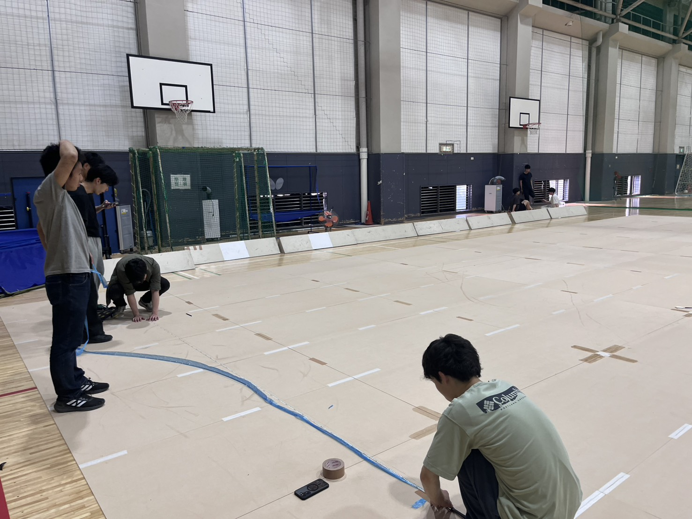
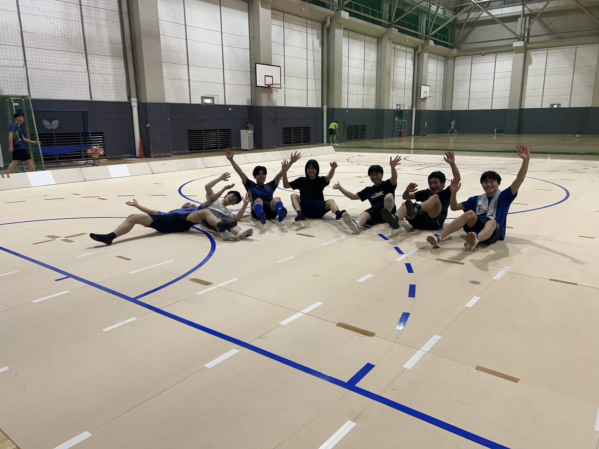

6月13日に板替えを行いました。
通常の練習や工大祭の実演による使用で板自体が劣化し、 長く使っていたことによってニスの塗装が剥げてしまったので古い板を廃棄し板を新調しました。
現在所属している57期から60期の部員は板替えの経験がなく、手探りのなかでの挑戦となりました。 58期の部長柳井、キャプテン牧野の準備と当日の指揮の甲斐あり、トラブルなく板替えを遂行することができました。
当日は限られた上級生の中、たくさん入部してくれた一年生も頼もしい力となってくれました。
新しくなった板で練習を更に重ね、部活動全体のサイクルサッカーの技術向上に努めていきたいです。

ライン引きの様子

完成して集合写真